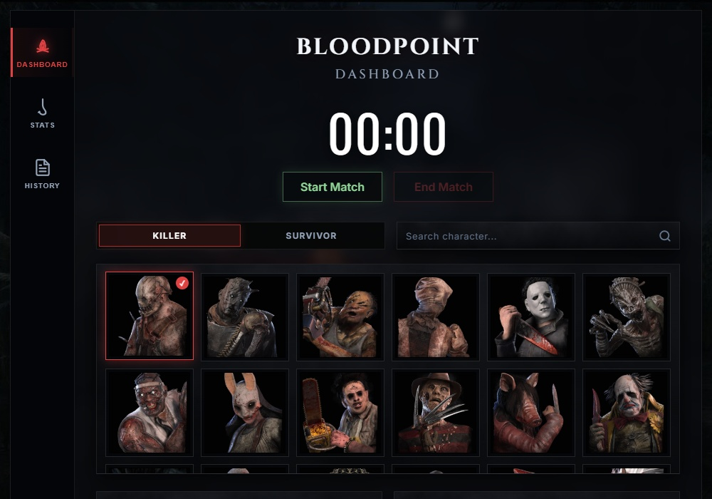
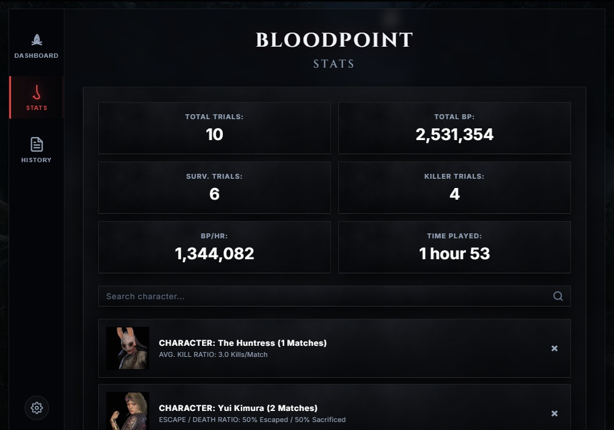
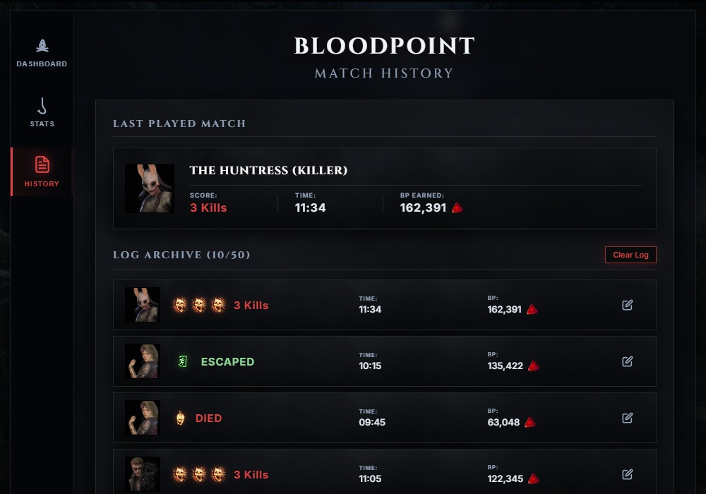

Global Background Shortcut
Play inside Dead by Daylight and start or end your match timer in the background using global hotkeys (F7 to F10) without ever tabbing out.
Compatible with Windows 10 & 11. Built with Tauri.



A bunch of nice tracking features designed by a Dead by Daylight player for Dead by Daylight players.
Play inside Dead by Daylight and start or end your match timer in the background using global hotkeys (F7 to F10) without ever tabbing out.
Select up to 3 characters on the stats tab. Compare escape/death ratios, average kills per match, and Bloodpoints earned.
Get the app running in under a minute.
Click the download button above to download the Windows setup executable bundle.
Run the downloaded setup file. Follow the quick wizard to install the application locally.
Open Bloodpoint. Set your global timer shortcut in the settings modal and start playing!
Behind the developer and player.
Hey, I'm a Dead by Daylight player and hobby coder. This app idea came from a friend of mine who recommended making a web browser BP tracker. I got kinda carried away and ended up creating this desktop app, Bloodpoint (i know, very creative name).
If you enjoy keeping track of your trials, or if you just love lists and stats like me, this app is for you. Hope you enjoy!